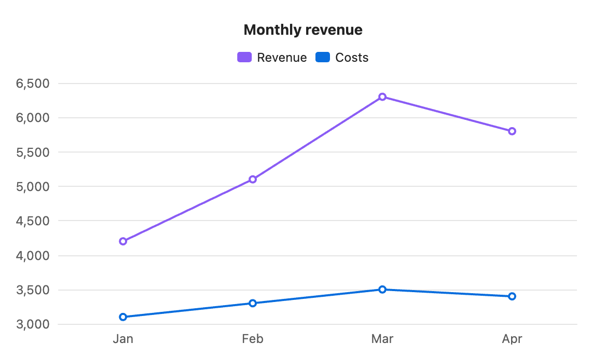
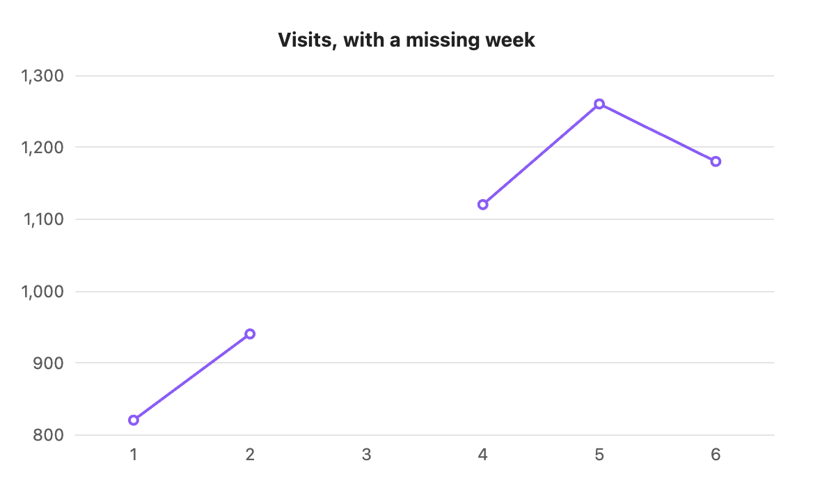
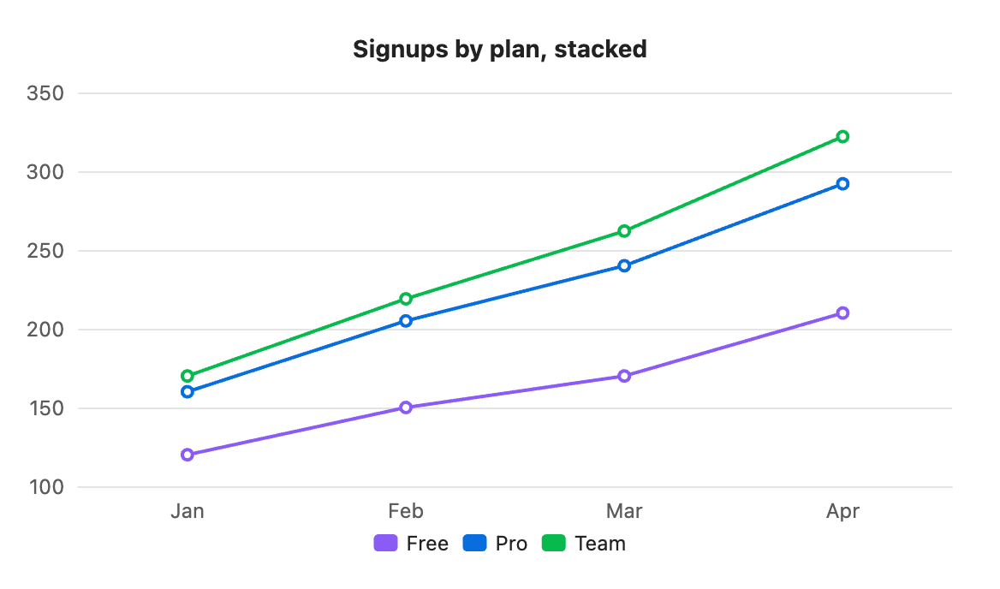

Line chart
Lines show how values change across labels, usually over time. Each series is one line.

```s-chart
type: line
title: Monthly revenue
---
| Month | Revenue | Costs |
| ----- | ------- | ----- |
| Jan | 4200 | 3100 |
| Feb | 5100 | 3300 |
| Mar | 6300 | 3500 |
| Apr | 5800 | 3400 |
```When to use it
Use a line chart for trends: weight by day, visitors by week, savings by month. To show the size of each value as well as the trend, try an area chart.
Options
| Option | On a line chart |
|---|---|
type: line | Required. |
title | Text above the chart. |
x-label | Title for the label axis along the bottom. |
y-label | Title for the value axis. |
stacked | true adds each line on top of the one before, so the top line is the total. |
legend | top, bottom or none. Shown at the top for two or more series. |
height | Chart height in pixels, 120 to 1200. |
colors | One colour per line. |
palette | A palette from settings. |
source, x, y | Draw from note properties. Line charts suit this best: one point per daily note. |
horizontal has no effect on line charts. The value axis fits the data rather than starting at zero, so small changes stay visible.
Gaps
An empty cell leaves a gap in the line instead of dropping to zero. Use this for a missing reading.

```s-chart
type: line
title: Visits, with a missing week
---
| Week | Visits |
| ---- | ------ |
| 1 | 820 |
| 2 | 940 |
| 3 | |
| 4 | 1,120 |
| 5 | 1,260 |
| 6 | 1,180 |
```Stacked

```s-chart
type: line
title: Signups by plan, stacked
stacked: true
legend: bottom
---
| Month | Free | Pro | Team |
| ----- | ---- | --- | ---- |
| Jan | 120 | 40 | 10 |
| Feb | 150 | 55 | 14 |
| Mar | 170 | 70 | 22 |
| Apr | 210 | 82 | 30 |
```Long series
With more than 50 rows, the dots on each point are hidden and only the line is drawn. Hover still shows each value.